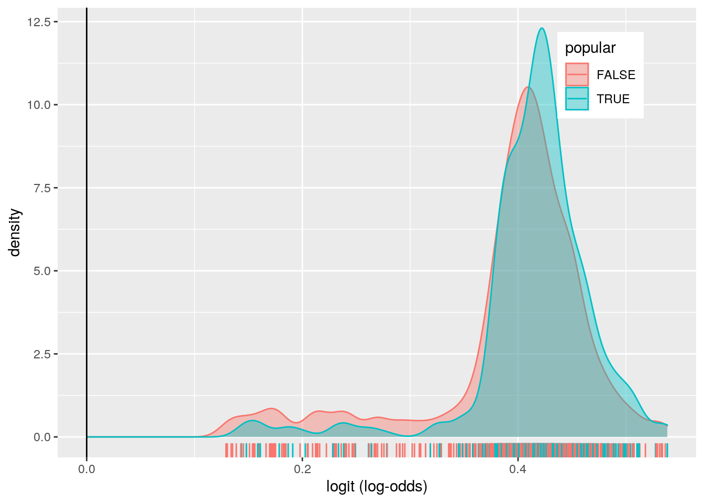

Charles Wolfe: caw5274
Below are the packages I used in my local RStudio environment. SpotifyR being the most unique towards this project.
#Setup
library(devtools)## Loading required package: usethislibrary(tidyverse)## ── Attaching packages ─────────────────────────────────────── tidyverse 1.3.0 ──## ✓ ggplot2 3.3.3 ✓ purrr 0.3.4
## ✓ tibble 3.0.4 ✓ dplyr 1.0.2
## ✓ tidyr 1.1.2 ✓ stringr 1.4.0
## ✓ readr 1.4.0 ✓ forcats 0.5.0## ── Conflicts ────────────────────────────────────────── tidyverse_conflicts() ──
## x dplyr::filter() masks stats::filter()
## x dplyr::lag() masks stats::lag()library(knitr)
library(dplyr)
library(corrplot)## corrplot 0.84 loadedlibrary(factoextra)## Welcome! Want to learn more? See two factoextra-related books at https://goo.gl/ve3WBalibrary(ggrepel)
library(FactoMineR)
library(rstatix)##
## Attaching package: 'rstatix'## The following object is masked from 'package:stats':
##
## filterlibrary(ggpubr)
library(ggplot2)
library(lmtest)## Loading required package: zoo##
## Attaching package: 'zoo'## The following objects are masked from 'package:base':
##
## as.Date, as.Date.numericlibrary(sandwich)
library(plotROC)
library(glmnet)## Loading required package: Matrix##
## Attaching package: 'Matrix'## The following objects are masked from 'package:tidyr':
##
## expand, pack, unpack## Loaded glmnet 4.0-2library(rstatix)spotifybig <- readr::read_csv('https://raw.githubusercontent.com/nairrj/DataWrangling/main/spotify_songs.csv')##
## ── Column specification ────────────────────────────────────────────────────────
## cols(
## .default = col_double(),
## track_id = col_character(),
## track_name = col_character(),
## track_artist = col_character(),
## track_album_id = col_character(),
## track_album_name = col_character(),
## track_album_release_date = col_character(),
## playlist_name = col_character(),
## playlist_id = col_character(),
## playlist_genre = col_character(),
## playlist_subgenre = col_character()
## )
## ℹ Use `spec()` for the full column specifications.#set.seed function
set.seed(10)
#taking sample of 10 rows from the iris dataset.
x<- sample(1:nrow(spotifybig), 1000)
spotify <- spotifybig[x, ]
dim(spotify)## [1] 1000 23glimpse(spotify)## Rows: 1,000
## Columns: 23
## $ track_id <chr> "322tcqPhma7F6hfCeLisx0", "6PRU3PZGzX3GAKjV3…
## $ track_name <chr> "fuck, i'm lonely (with Anne-Marie) - from “…
## $ track_artist <chr> "Lauv", "Art Of Dying", "Ozuna", "Rob Stepwa…
## $ track_popularity <dbl> 84, 39, 59, 14, 72, 40, 0, 67, 36, 60, 0, 50…
## $ track_album_id <chr> "60sI3iRfHfu7YpcTpZ29W1", "2eNUy0Cqad1MwpjF1…
## $ track_album_name <chr> "fuck, i'm lonely (with Anne-Marie) (from “1…
## $ track_album_release_date <chr> "2019-08-02", "2019-10-04", "2019-06-04", "2…
## $ playlist_name <chr> "Global Top 50 | 2020 Hits", "Rock Hard", "L…
## $ playlist_id <chr> "1KNl4AYfgZtOVm9KHkhPTF", "37i9dQZF1DWWJOmJ7…
## $ playlist_genre <chr> "latin", "rock", "latin", "edm", "edm", "lat…
## $ playlist_subgenre <chr> "latin hip hop", "hard rock", "latin pop", "…
## $ danceability <dbl> 0.806, 0.574, 0.442, 0.556, 0.553, 0.591, 0.…
## $ energy <dbl> 0.558, 0.936, 0.445, 0.723, 0.954, 0.758, 0.…
## $ key <dbl> 9, 5, 10, 2, 7, 0, 1, 8, 3, 11, 5, 8, 1, 4, …
## $ loudness <dbl> -6.460, -3.846, -4.071, -6.049, -2.883, -6.9…
## $ mode <dbl> 1, 1, 0, 1, 1, 1, 1, 1, 0, 1, 1, 1, 1, 1, 1,…
## $ speechiness <dbl> 0.0683, 0.1030, 0.0381, 0.0586, 0.0575, 0.05…
## $ acousticness <dbl> 4.82e-01, 1.18e-04, 6.53e-01, 1.19e-03, 3.77…
## $ instrumentalness <dbl> 0.00e+00, 0.00e+00, 0.00e+00, 8.87e-01, 4.29…
## $ liveness <dbl> 0.0618, 0.1160, 0.1180, 0.1870, 0.4080, 0.06…
## $ valence <dbl> 0.678, 0.499, 0.423, 0.223, 0.236, 0.179, 0.…
## $ tempo <dbl> 95.016, 123.958, 85.744, 219.961, 125.890, 1…
## $ duration_ms <dbl> 198973, 205000, 179937, 115636, 170476, 1858…Variables:
ORGANIZATIONAL VARIABLES
track_id: Specific number for each track
track_name: Track name
track_artist: Track’s artist
track_popularity: Percentile of track popularity
track_album_id: Specific number for each album
track_album_name: Album name
track_album_release_date: Release date in YYYY-MM-DD
playlist_name: Playlist name
Playlist_id: Specific number for each playlist
Playlist_genre: Main genre group of playlist (ex. edm)
Playlist_subgenre: Subgenre of playlist (ex. big room)
PREDICTIVE SCORE VARIABLES
danceability: score 1 to 0, intensity of rhythm
energy: Score 1 to 0, intensity of volume, lack of dynamics
key: value starting at 0, 0 corresponding to middle C
loudness: absolute value corresponding to amplitude
mode: major or minor, 0 or 1
speechiness: score 1 to 0, detects vowel sounds
acousticness: score 1 to 0, predicts if track is acoustic
instrumentalness: score 1 to 0, how non-vocal is track
liveness: score 1 to 0, estimated live performance
valence: score 1 to 0, estimated happiness of track
tempo: estimated tempo of track. Sometimes is doubled for cut time?
duration_ms: duration of track in milliseconds(ms)
Popularity:score of 1 to 100. 100 being most popular.
Now I want to retain only the numeric ‘predictive score variables’
spotify_music_numeric <- spotify %>% select(-c(track_artist, track_album_id, track_album_name, track_album_release_date, playlist_name, playlist_id, playlist_genre, playlist_subgenre)) %>% mutate(popular = (track_popularity > 50))
dim(spotify_music_numeric)## [1] 1000 16glimpse(spotify_music_numeric)## Rows: 1,000
## Columns: 16
## $ track_id <chr> "322tcqPhma7F6hfCeLisx0", "6PRU3PZGzX3GAKjV3G8bpm", …
## $ track_name <chr> "fuck, i'm lonely (with Anne-Marie) - from “13 Reaso…
## $ track_popularity <dbl> 84, 39, 59, 14, 72, 40, 0, 67, 36, 60, 0, 50, 22, 61…
## $ danceability <dbl> 0.806, 0.574, 0.442, 0.556, 0.553, 0.591, 0.931, 0.2…
## $ energy <dbl> 0.558, 0.936, 0.445, 0.723, 0.954, 0.758, 0.387, 0.9…
## $ key <dbl> 9, 5, 10, 2, 7, 0, 1, 8, 3, 11, 5, 8, 1, 4, 0, 2, 0,…
## $ loudness <dbl> -6.460, -3.846, -4.071, -6.049, -2.883, -6.984, -9.1…
## $ mode <dbl> 1, 1, 0, 1, 1, 1, 1, 1, 0, 1, 1, 1, 1, 1, 1, 1, 1, 0…
## $ speechiness <dbl> 0.0683, 0.1030, 0.0381, 0.0586, 0.0575, 0.0558, 0.41…
## $ acousticness <dbl> 4.82e-01, 1.18e-04, 6.53e-01, 1.19e-03, 3.77e-03, 1.…
## $ instrumentalness <dbl> 0.00e+00, 0.00e+00, 0.00e+00, 8.87e-01, 4.29e-02, 2.…
## $ liveness <dbl> 0.0618, 0.1160, 0.1180, 0.1870, 0.4080, 0.0642, 0.13…
## $ valence <dbl> 0.678, 0.499, 0.423, 0.223, 0.236, 0.179, 0.376, 0.3…
## $ tempo <dbl> 95.016, 123.958, 85.744, 219.961, 125.890, 123.970, …
## $ duration_ms <dbl> 198973, 205000, 179937, 115636, 170476, 185875, 1794…
## $ popular <lgl> TRUE, FALSE, TRUE, FALSE, TRUE, FALSE, FALSE, TRUE, …Perform a MANOVA testing whether any of your numeric variables (or a subset of them, if including them all is unreasonable or doesn’t make sense) show a mean difference across levels of one of your categorical variables (3).
spotify_music_numeric_means <- spotify_music_numeric %>% group_by(popular) %>% summarize(mean(danceability), mean(energy), mean(key), mean(loudness), mean(mode), mean(speechiness), mean(acousticness), mean(instrumentalness), mean(liveness), mean(valence), mean(tempo), mean(duration_ms))## `summarise()` ungrouping output (override with `.groups` argument)head(spotify_music_numeric_means)## # A tibble: 2 x 13
## popular `mean(danceabil… `mean(energy)` `mean(key)` `mean(loudness)`
## <lgl> <dbl> <dbl> <dbl> <dbl>
## 1 FALSE 0.644 0.709 5.05 -6.92
## 2 TRUE 0.667 0.681 5.38 -6.43
## # … with 8 more variables: `mean(mode)` <dbl>, `mean(speechiness)` <dbl>,
## # `mean(acousticness)` <dbl>, `mean(instrumentalness)` <dbl>,
## # `mean(liveness)` <dbl>, `mean(valence)` <dbl>, `mean(tempo)` <dbl>,
## # `mean(duration_ms)` <dbl>group <- spotify_music_numeric$popular
DVs <- spotify_music_numeric %>% select(danceability, energy, key, loudness, mode, speechiness, acousticness, instrumentalness, liveness, valence, tempo, duration_ms)
sapply(split(DVs, group), mshapiro_test)## FALSE TRUE
## statistic 0.9286966 0.8636693
## p.value 2.966546e-16 2.84566e-18It appears that multivariate normality is met!
MANLY <- manova(cbind(danceability, energy, key, loudness, mode, speechiness, acousticness, instrumentalness, liveness, valence, tempo, duration_ms) ~ track_popularity, data = spotify_music_numeric)
summary(MANLY)## Df Pillai approx F num Df den Df Pr(>F)
## track_popularity 1 0.069094 6.1048 12 987 2.062e-10 ***
## Residuals 998
## ---
## Signif. codes: 0 '***' 0.001 '**' 0.01 '*' 0.05 '.' 0.1 ' ' 1Looking at the MANOVA, track_popularity does differ by danceability, energy, key, loudness, mode, speechiness, acousticness, instrumentalness, liveness, valence, tempo, duration_ms. Now which ones??
If they do, perform univariate ANOVAs to find response(s) showing a mean difference across groups (3), and perform post-hoc t tests to find which groups differ (3).
summary.aov(MANLY)## Response danceability :
## Df Sum Sq Mean Sq F value Pr(>F)
## track_popularity 1 0.1925 0.192498 8.7118 0.003236 **
## Residuals 998 22.0520 0.022096
## ---
## Signif. codes: 0 '***' 0.001 '**' 0.01 '*' 0.05 '.' 0.1 ' ' 1
##
## Response energy :
## Df Sum Sq Mean Sq F value Pr(>F)
## track_popularity 1 0.483 0.48299 15.127 0.0001071 ***
## Residuals 998 31.864 0.03193
## ---
## Signif. codes: 0 '***' 0.001 '**' 0.01 '*' 0.05 '.' 0.1 ' ' 1
##
## Response key :
## Df Sum Sq Mean Sq F value Pr(>F)
## track_popularity 1 12.3 12.305 0.9364 0.3334
## Residuals 998 13113.8 13.140
##
## Response loudness :
## Df Sum Sq Mean Sq F value Pr(>F)
## track_popularity 1 16.0 15.9545 1.7812 0.1823
## Residuals 998 8939.5 8.9574
##
## Response mode :
## Df Sum Sq Mean Sq F value Pr(>F)
## track_popularity 1 0.206 0.20567 0.8456 0.358
## Residuals 998 242.738 0.24322
##
## Response speechiness :
## Df Sum Sq Mean Sq F value Pr(>F)
## track_popularity 1 0.0088 0.0087611 0.8064 0.3694
## Residuals 998 10.8421 0.0108638
##
## Response acousticness :
## Df Sum Sq Mean Sq F value Pr(>F)
## track_popularity 1 0.356 0.35595 6.9469 0.008527 **
## Residuals 998 51.137 0.05124
## ---
## Signif. codes: 0 '***' 0.001 '**' 0.01 '*' 0.05 '.' 0.1 ' ' 1
##
## Response instrumentalness :
## Df Sum Sq Mean Sq F value Pr(>F)
## track_popularity 1 0.494 0.49427 11.159 0.0008674 ***
## Residuals 998 44.206 0.04429
## ---
## Signif. codes: 0 '***' 0.001 '**' 0.01 '*' 0.05 '.' 0.1 ' ' 1
##
## Response liveness :
## Df Sum Sq Mean Sq F value Pr(>F)
## track_popularity 1 0.037 0.036953 1.6122 0.2045
## Residuals 998 22.875 0.022921
##
## Response valence :
## Df Sum Sq Mean Sq F value Pr(>F)
## track_popularity 1 0.003 0.003063 0.0551 0.8145
## Residuals 998 55.469 0.055580
##
## Response tempo :
## Df Sum Sq Mean Sq F value Pr(>F)
## track_popularity 1 127 127.14 0.1689 0.6811
## Residuals 998 751045 752.55
##
## Response duration_ms :
## Df Sum Sq Mean Sq F value Pr(>F)
## track_popularity 1 4.9572e+10 4.9572e+10 14.859 0.0001233 ***
## Residuals 998 3.3295e+12 3.3362e+09
## ---
## Signif. codes: 0 '***' 0.001 '**' 0.01 '*' 0.05 '.' 0.1 ' ' 1From the ANOVA, it appears that Acousticness, Energy, Instrumentalness, and Duration_ms vary closest with track_popularity.
spotify_music_numeric%>%group_by(popular)%>%summarize(mean(acousticness),mean(energy), mean(instrumentalness), mean(duration_ms))## `summarise()` ungrouping output (override with `.groups` argument)## # A tibble: 2 x 5
## popular `mean(acousticnes… `mean(energy)` `mean(instrumenta… `mean(duration_m…
## <lgl> <dbl> <dbl> <dbl> <dbl>
## 1 FALSE 0.173 0.709 0.0984 225431.
## 2 TRUE 0.197 0.681 0.0445 219542.pairwise.t.test(spotify_music_numeric$acousticness, spotify_music_numeric$popular, p.adj="none")##
## Pairwise comparisons using t tests with pooled SD
##
## data: spotify_music_numeric$acousticness and spotify_music_numeric$popular
##
## FALSE
## TRUE 0.093
##
## P value adjustment method: nonepairwise.t.test(spotify_music_numeric$energy, spotify_music_numeric$popular, p.adj="none")##
## Pairwise comparisons using t tests with pooled SD
##
## data: spotify_music_numeric$energy and spotify_music_numeric$popular
##
## FALSE
## TRUE 0.018
##
## P value adjustment method: nonepairwise.t.test(spotify_music_numeric$instrumentalness, spotify_music_numeric$popular, p.adj="none")##
## Pairwise comparisons using t tests with pooled SD
##
## data: spotify_music_numeric$instrumentalness and spotify_music_numeric$popular
##
## FALSE
## TRUE 7.4e-05
##
## P value adjustment method: nonepairwise.t.test(spotify_music_numeric$duration_ms, spotify_music_numeric$popular, p.adj="none")##
## Pairwise comparisons using t tests with pooled SD
##
## data: spotify_music_numeric$duration_ms and spotify_music_numeric$popular
##
## FALSE
## TRUE 0.12
##
## P value adjustment method: noneOf the post hoc t-tests, energy and intstrumentalness populations are significantly different than the track_popularity population. Duration_ms and acousticness are not significantly different.
spotify_music_numeric.long <- spotify_music_numeric %>% select(-c(track_id, track_name)) %>%
pivot_longer(-track_popularity, names_to = "variables", values_to = "value")
spotify_music_numeric.long %>% sample_n(10)## # A tibble: 10 x 3
## track_popularity variables value
## <dbl> <chr> <dbl>
## 1 51 instrumentalness 0.833
## 2 18 energy 0.808
## 3 71 duration_ms 201290
## 4 54 speechiness 0.0906
## 5 69 energy 0.911
## 6 56 energy 0.535
## 7 33 popular 0
## 8 67 key 9
## 9 18 loudness -8.68
## 10 34 speechiness 0.0276#stat.test <- spotify_music_numeric.long %>%
# group_by(variables) %>%
# t_test(value ~ track_popularity, p.adjust.method = "none")
# stat.test %>% select(-.y., -statistic, -df)-Discuss the number of tests you have performed, calculate the probability of at least one type I error (if unadjusted), and adjust the significance level accordingly (bonferroni correction) before discussing significant differences (3).
We did 1 MANOVA + 12 ANOVA + 4 t-pairwise t tests. With a bonferroni corrected score of a=0.05/(1+12+4), a=0.0029. Now only the instrumentalness score is significant. Energy, with a p values of 0.02 can no longer be considered significant.
-Briefly discuss some of the MANOVA assumptions and whether or not they are likely to have been met here (no need for anything too in-depth) (2).
MANOVA assumes many things! According to the shapiro test, the data does fit the criterea for multivariate normality. However i cannot say whether this is a perfectly sampled dataset from the whole spotify reservoir.
The variance in this dataset does show some heteroskadisticity, so I am hesitant to say whether these datasets are homogenous in variance.
There are no extreme outliers! This is because the variables are all set between 0 and 100.
I dont think the DVs are overly correlated, later in the project there are plenty of plots showing how non perfectly correlated this datasets DVs are.
-Perform some kind of randomization test on your data (that makes sense). The statistic can be anything you want (mean difference, correlation, F-statistic/ANOVA, chi-squared), etc. State null and alternative hypotheses, perform the test, and interpret the results (7).
head(spotify_music_numeric) ## # A tibble: 6 x 16
## track_id track_name track_popularity danceability energy key loudness mode
## <chr> <chr> <dbl> <dbl> <dbl> <dbl> <dbl> <dbl>
## 1 322tcqP… fuck, i'm… 84 0.806 0.558 9 -6.46 1
## 2 6PRU3PZ… Rearview … 39 0.574 0.936 5 -3.85 1
## 3 6pK5edD… Amor Genu… 59 0.442 0.445 10 -4.07 0
## 4 6gT6ZGq… Long Isla… 14 0.556 0.723 2 -6.05 1
## 5 1SG6r7d… Never Cha… 72 0.553 0.954 7 -2.88 1
## 6 1h5B6ME… Hold on t… 40 0.591 0.758 0 -6.98 1
## # … with 8 more variables: speechiness <dbl>, acousticness <dbl>,
## # instrumentalness <dbl>, liveness <dbl>, valence <dbl>, tempo <dbl>,
## # duration_ms <dbl>, popular <lgl>spotify_music_numeric %>% group_by(popular) %>%
summarize(means=mean(loudness)) %>% summarize(`mean_diff`=diff(means))## `summarise()` ungrouping output (override with `.groups` argument)## # A tibble: 1 x 1
## mean_diff
## <dbl>
## 1 0.491Create a plot visualizing the null distribution and the test statistic (3).
rand_dist<-vector() #create vector to hold diffs under null hypothesis
for(i in 1:500){
new<-data.frame(time=sample(spotify_music_numeric$loudness),condition=spotify_music_numeric$popular) #scramble columns
rand_dist[i]<-mean(new[new$condition=="TRUE",]$time)-
mean(new[new$condition=="FALSE",]$time)} #compute mean difference (base R)
mean(rand_dist< -0.491 | rand_dist> 0.491 ) ## [1] 0.018{hist(rand_dist,main="",ylab=""); abline(v = c(-0.491, 0.491),col="red")}H0: choosing the mean difference value was due to random chance, pulling the mean difference would be the same regardless of assignment.
H: Not random chance
From the randomization test p = 0.014, we can reject the null hypothesis! We can tell the associations discerned from the observed data are not due to random chance!
Build a linear regression model predicting one of your response variables from at least 2 other variables, including their interaction. Mean-center any numeric variables involved in the interaction.
-Interpret the coefficient estimates (do not discuss significance) (10)
Here is the linear model including all the variables So I tried to use an lm containing the interaction between all the variables. My computer HATED it. So i am going to find the two influential variables, and pick them.
Linearmodelv1.0 <- lm(track_popularity ~ danceability + energy + loudness + speechiness + acousticness + instrumentalness + liveness + valence + tempo + duration_ms + key, data = spotify_music_numeric)
summary(Linearmodelv1.0)##
## Call:
## lm(formula = track_popularity ~ danceability + energy + loudness +
## speechiness + acousticness + instrumentalness + liveness +
## valence + tempo + duration_ms + key, data = spotify_music_numeric)
##
## Residuals:
## Min 1Q Median 3Q Max
## -52.522 -17.012 3.053 18.171 60.827
##
## Coefficients:
## Estimate Std. Error t value Pr(>|t|)
## (Intercept) 7.210e+01 9.602e+00 7.508 1.34e-13 ***
## danceability 1.338e+01 5.988e+00 2.235 0.02566 *
## energy -3.185e+01 6.999e+00 -4.550 6.03e-06 ***
## loudness 1.606e+00 3.711e-01 4.328 1.66e-05 ***
## speechiness -1.511e+01 7.486e+00 -2.018 0.04384 *
## acousticness 3.417e+00 4.072e+00 0.839 0.40162
## instrumentalness -7.941e+00 3.847e+00 -2.064 0.03928 *
## liveness 1.837e+00 5.179e+00 0.355 0.72294
## valence -9.196e-01 3.758e+00 -0.245 0.80671
## tempo 2.629e-02 2.874e-02 0.915 0.36060
## duration_ms -3.821e-05 1.333e-05 -2.865 0.00425 **
## key 2.178e-01 2.096e-01 1.039 0.29891
## ---
## Signif. codes: 0 '***' 0.001 '**' 0.01 '*' 0.05 '.' 0.1 ' ' 1
##
## Residual standard error: 23.92 on 988 degrees of freedom
## Multiple R-squared: 0.06686, Adjusted R-squared: 0.05647
## F-statistic: 6.435 on 11 and 988 DF, p-value: 2.18e-10From the significant coefficiant estimates, it appears energy, speechiness, instrumentalness, and duration_ms are all negatively correlated with popularity. Danceability and loudness are positively correlated with track popularity.
Instrumentalness has the most drastic slope of the significant variable coefficients (Strong negative), this makes sense, as most popular song do contain lyrics.
The trend seems, according to this linear regression model, that popular songs tend to be loud, vocal, short in length, and danceable.
Oddly, energy has a moderate negative correlation with popularity.
Note: speechiness is a term often associated with talking speech, speechiness does not equate top vocals in a song. Often speechiness is used to classify podcast material on spotify.
Selecting Acousticness, Energy, and Instrumentalness. I center the variables and re-run the linear regression.
spotify_music_numeric$energy_c <- spotify_music_numeric$energy - mean(spotify_music_numeric$energy)
spotify_music_numeric$acousticness_c <- spotify_music_numeric$acousticness - mean(spotify_music_numeric$acousticness)
spotify_music_numeric$instrumentalness_c <- spotify_music_numeric$instrumentalness - mean(spotify_music_numeric$instrumentalness)
Linearmodelv2.0 <- lm(track_popularity ~ energy_c*acousticness_c*instrumentalness_c, data=spotify_music_numeric)
summary(Linearmodelv2.0)##
## Call:
## lm(formula = track_popularity ~ energy_c * acousticness_c * instrumentalness_c,
## data = spotify_music_numeric)
##
## Residuals:
## Min 1Q Median 3Q Max
## -47.746 -17.284 2.906 19.196 56.847
##
## Coefficients:
## Estimate Std. Error t value Pr(>|t|)
## (Intercept) 41.9155 0.8652 48.444 < 2e-16
## energy_c -13.6611 5.1992 -2.628 0.00873
## acousticness_c 2.5222 4.6571 0.542 0.58822
## instrumentalness_c -13.5745 5.1593 -2.631 0.00864
## energy_c:acousticness_c 4.4402 16.7075 0.266 0.79048
## energy_c:instrumentalness_c -3.9204 24.8421 -0.158 0.87464
## acousticness_c:instrumentalness_c 7.0104 25.4937 0.275 0.78338
## energy_c:acousticness_c:instrumentalness_c -34.8051 72.2768 -0.482 0.63023
##
## (Intercept) ***
## energy_c **
## acousticness_c
## instrumentalness_c **
## energy_c:acousticness_c
## energy_c:instrumentalness_c
## acousticness_c:instrumentalness_c
## energy_c:acousticness_c:instrumentalness_c
## ---
## Signif. codes: 0 '***' 0.001 '**' 0.01 '*' 0.05 '.' 0.1 ' ' 1
##
## Residual standard error: 24.36 on 992 degrees of freedom
## Multiple R-squared: 0.02764, Adjusted R-squared: 0.02078
## F-statistic: 4.028 on 7 and 992 DF, p-value: 0.0002317From the significant coefficiant estimates, energy and istrumentalness are negatively correlated with track_popularity. None of the interactions are signficantly correlated with the DV. Regardless, all of the binary interactions are negatively correlated with the DV the except energy_c and instrumentalness_c interaction. The interaction between all of the IVs are very negatively correlated with the DV.
-Plot the regression using ggplot() using geom_smooth(method=“lm”). If your interaction is numeric by numeric, refer to code in the slides to make the plot or check out the interactions package, which makes this easier. If you have 3 or more predictors, just chose two of them to plot for convenience. (10)
spotify_music_numeric %>% ggplot(aes(track_popularity, energy)) + geom_point() + geom_smooth(method = 'lm',se=F)## `geom_smooth()` using formula 'y ~ x'-What proportion of the variation in the outcome does your model explain? (4)
coefficients <- summary(Linearmodelv2.0)$coefficients[2:8,1]
coefficients <- data.frame(round(coefficients, digits=2))
colnames(coefficients) <- "Coefficients"
Percentage = 100*round((abs(coefficients$Coefficients)/sum(abs(coefficients$Coefficients))),2)
coefficients = cbind(coefficients, Percentage)
coefficients <- coefficients[order(-coefficients$Percentage),,drop=FALSE]
coefficients$Percentage <- paste(as.character(coefficients$Percentage),"%")
coefficients## Coefficients Percentage
## energy_c:acousticness_c:instrumentalness_c -34.81 44 %
## energy_c -13.66 17 %
## instrumentalness_c -13.57 17 %
## acousticness_c:instrumentalness_c 7.01 9 %
## energy_c:acousticness_c 4.44 6 %
## energy_c:instrumentalness_c -3.92 5 %
## acousticness_c 2.52 3 %summary(Linearmodelv2.0)$r.sq## [1] 0.02763954This model, based on the interaction between energy_c:speechiness_c:danceability_c, is able to explain approximately 2.7% of the variance in the dataset. Which is not much at all :C
-Check assumptions of linearity, normality, and homoskedasticity either graphically or using a hypothesis test (5)
rf_1 <- ggplot(Linearmodelv2.0, aes(.fitted, .resid)) +
geom_point() +
geom_smooth(se = FALSE)
ggtitle("Residuals vs Fitted")## $title
## [1] "Residuals vs Fitted"
##
## attr(,"class")
## [1] "labels"rf_1## `geom_smooth()` using method = 'gam' and formula 'y ~ s(x, bs = "cs")'summary(Linearmodelv2.0)$r.sq## [1] 0.02763954Hmmm. Hard to tell whether the data is fanning. My suspicion is there is heteroskadisticity present, still I want to check formally.
ks.test(Linearmodelv2.0$residuals, "pnorm", mean=0, sd(Linearmodelv2.0$residuals))## Warning in ks.test(Linearmodelv2.0$residuals, "pnorm", mean = 0,
## sd(Linearmodelv2.0$residuals)): ties should not be present for the Kolmogorov-
## Smirnov test##
## One-sample Kolmogorov-Smirnov test
##
## data: Linearmodelv2.0$residuals
## D = 0.062024, p-value = 0.0009111
## alternative hypothesis: two-sidedbptest(Linearmodelv2.0)##
## studentized Breusch-Pagan test
##
## data: Linearmodelv2.0
## BP = 13.656, df = 7, p-value = 0.05765The formal tests confirm that there is There is heteroskadisticity within the model. The KS test yeilds a low P-value meaning that the lack of fit is significant, the residual is not normal.
-Regardless, recompute regression results with robust standard errors via coeftest(…, vcov=vcovHC(…)). Discuss significance of results, including any changes from before/after robust SEs if applicable. (10)
coeftest(Linearmodelv2.0, vcov = vcovHC(Linearmodelv2.0))[,1:2]## Estimate Std. Error
## (Intercept) 41.915489 0.8517086
## energy_c -13.661115 5.1939437
## acousticness_c 2.522243 4.4026382
## instrumentalness_c -13.574523 4.2326677
## energy_c:acousticness_c 4.440197 14.9787436
## energy_c:instrumentalness_c -3.920400 23.0827095
## acousticness_c:instrumentalness_c 7.010413 21.6894674
## energy_c:acousticness_c:instrumentalness_c -34.805121 62.8042534Using the robust standard errorsm the coefficiants, the coefficiants remain identical, but the errors do decrease slightly. Robust standard errors are especially useful when the data does not meet the assumption of homoskadisicity!
-Rerun same regression model (with the interaction), but this time compute bootstrapped standard errors (either by resampling observations or residuals). Discuss any changes you observe in SEs and p-values using these SEs compared to the original SEs and the robust SEs)
samp_distn<-replicate(5000, {
boot_dat<-spotify_music_numeric[sample(nrow(spotify_music_numeric),replace=TRUE),]
fit<-lm(track_popularity ~ energy_c*acousticness_c*instrumentalness_c, data=boot_dat)
coef(fit)
})samp_distn%>%t%>%as.data.frame%>%summarize_all(sd)## (Intercept) energy_c acousticness_c instrumentalness_c
## 1 0.8502709 5.202566 4.525512 4.315353
## energy_c:acousticness_c energy_c:instrumentalness_c
## 1 14.87878 22.74854
## acousticness_c:instrumentalness_c energy_c:acousticness_c:instrumentalness_c
## 1 22.71567 64.55766Bootstrapped standard errors are good when an assumption is violated. In this case, the bootstrapped SEs are analogous to the robust SEs and the standard SEs as seen before. When there are differences, the bootstrapped SEs are slightly greater than the observed SEs.
Fit a logistic regression model predicting a binary variable (if you don’t have one, make/get one) from at least two explanatory variables (interaction not necessary).
-Interpret coefficient estimates in context (10)
First, to generate a binary response variable. I created this one based off the “popular” caterogical variable, which reads “TRUE” if the track_popularity > 50.
data <- spotify_music_numeric %>% mutate(y=ifelse(popular=="TRUE",1,0))
head(data)## # A tibble: 6 x 20
## track_id track_name track_popularity danceability energy key loudness mode
## <chr> <chr> <dbl> <dbl> <dbl> <dbl> <dbl> <dbl>
## 1 322tcqP… fuck, i'm… 84 0.806 0.558 9 -6.46 1
## 2 6PRU3PZ… Rearview … 39 0.574 0.936 5 -3.85 1
## 3 6pK5edD… Amor Genu… 59 0.442 0.445 10 -4.07 0
## 4 6gT6ZGq… Long Isla… 14 0.556 0.723 2 -6.05 1
## 5 1SG6r7d… Never Cha… 72 0.553 0.954 7 -2.88 1
## 6 1h5B6ME… Hold on t… 40 0.591 0.758 0 -6.98 1
## # … with 12 more variables: speechiness <dbl>, acousticness <dbl>,
## # instrumentalness <dbl>, liveness <dbl>, valence <dbl>, tempo <dbl>,
## # duration_ms <dbl>, popular <lgl>, energy_c <dbl>, acousticness_c <dbl>,
## # instrumentalness_c <dbl>, y <dbl>fit <- glm(y ~ energy+acousticness+instrumentalness, data=data)
coeftest(fit)##
## z test of coefficients:
##
## Estimate Std. Error z value Pr(>|z|)
## (Intercept) 0.524608 0.081870 6.4078 1.476e-10 ***
## energy -0.156647 0.102415 -1.5295 0.1261
## acousticness 0.046138 0.081085 0.5690 0.5693
## instrumentalness -0.283515 0.072824 -3.8932 9.895e-05 ***
## ---
## Signif. codes: 0 '***' 0.001 '**' 0.01 '*' 0.05 '.' 0.1 ' ' 1Of the significantly different coefficiants.
For every one unit increase in instrumentalness, the odds for track_popularity change by a factor of e^-0.28 or 0.75
-Report a confusion matrix for your logistic regression (5) Compute and discuss the Accuracy, Sensitivity (TPR), Specificity (TNR), Precision (PPV), and AUC of your model (5)
probs<-predict(fit,type="response") #get predicted probs from model
## Confusion matrix
table(predict=as.numeric(probs>.5),truth=data$y)%>%addmargins## truth
## predict 0 1 Sum
## 0 583 389 972
## 1 15 13 28
## Sum 598 402 1000(583+13)/1000 #accuracy## [1] 0.596583/972 #tpr## [1] 0.599794213/28 #tnr## [1] 0.4642857583 /598 #ppv## [1] 0.9749164According to slide 22 of the logistic1 powerpoint.
Accuracy: 60%, which is pretty bad, considering there is almost a 50/50 chance in choosing the right value.
Sensitivity and specificity are 60% and 46% respectively. This means that the proportion of popular songs and nonpopular songs were not correctly classified by the model
Precision: oddly was 97%! which means that the model was really good at classifying non-popular songs!
-Using ggplot, make a density plot of the log-odds (logit) colored/grouped by your binary outcome variable (5)
data$logit<-predict(fit,type="link")
data%>%ggplot()+geom_density(aes(logit,color=popular,fill=popular), alpha=.4)+
theme(legend.position=c(.85,.85))+geom_vline(xintercept=0)+xlab("logit (log-odds)")+
geom_rug(aes(logit,color=popular))+
geom_text(x=-5,y=.07,label="TN = 431")+
geom_text(x=-1.75,y=.008,label="FN = 19")+
geom_text(x=1,y=.006,label="FP = 13")+
geom_text(x=5,y=.04,label="TP = 220")
-Generate an ROC curve (plot) and calculate AUC (either manually or with a package); interpret (5)
#geom_roc needs actual outcome (0,1) and predicted probability (or predictor if just one)
ROCplot<-ggplot(data)+geom_roc(aes(d=y,m=probs), n.cuts=0)
ROCplotcalc_auc(ROCplot)## PANEL group AUC
## 1 1 -1 0.5816403According the the slides, this area under the curve is considered bad (0.58). The AUC is only slightly better than a classifier that randomly predicts 1s and 0s. This may be due to the smaller sample size? The results from the logit plot confirm my suspicion that the model is missclassifying “popular” and “non-popular” songs.
Perform a logistic regression predicting the same binary response variable from ALL of the rest of your variables (the more, the better!)
-Fit model, compute in-sample classification diagnostics (Accuracy, Sensitivity, Specificity, Precision, AUC), and interpret (5)
fit2 <- glm(y~danceability + energy + loudness + speechiness + acousticness + instrumentalness + liveness + valence + tempo + duration_ms + key, data=data)
#summary(fit2)
probs<-predict(fit2,type="response") #get predicted probs from model
## Confusion matrix
table(predict=as.numeric(probs>.5),truth=data$y)%>%addmargins## truth
## predict 0 1 Sum
## 0 524 297 821
## 1 74 105 179
## Sum 598 402 1000(524+105)/1000 #accuracy## [1] 0.629524/821 #tpr## [1] 0.638246105/179 #tnr## [1] 0.5865922524/598 #ppv## [1] 0.8762542According to slide 22 of the logistic1 powerpoint.
Accuracy: 63%, which is an improvement! It’s still not great, considering there is almost a 50/50 chance in choosing the right value.
Sensitivity and specificity are 63% and 58% respectively. This means that the proportion of popular songs and nonpopular songs are better classified by this model versus the previous glm. Despite the improvement, this model is still pretty bad at classifying popular and non popular songs.
Precision: oddly was 88%, worse than 97% before. This still means that the model was adept at classifying non-popular songs!
-Perform 10-fold (or repeated random sub-sampling) CV with the same model and report average out-of-sample classification diagnostics (Accuracy, Sensitivity, Specificity, Precision, and AUC); interpret AUC and compare with the in-sample metrics (10)
class_diag<-function(probs,truth){
if(is.numeric(truth)==FALSE & is.logical(truth)==FALSE) truth<-as.numeric(truth)-1
tab<-table(factor(probs>.5,levels=c("FALSE","TRUE")),truth)
prediction<-ifelse(probs>.5,1,0)
acc=mean(truth==prediction)
sens=mean(prediction[truth==1]==1)
spec=mean(prediction[truth==0]==0)
ppv=mean(truth[prediction==1]==1)
f1=2*(sens*ppv)/(sens+ppv)
#CALCULATE EXACT AUC
ord<-order(probs, decreasing=TRUE)
probs <- probs[ord]; truth <- truth[ord]
TPR=cumsum(truth)/max(1,sum(truth))
FPR=cumsum(!truth)/max(1,sum(!truth))
dup<-c(probs[-1]>=probs[-length(probs)], FALSE)
TPR<-c(0,TPR[!dup],1); FPR<-c(0,FPR[!dup],1)
n <- length(TPR)
auc<- sum( ((TPR[-1]+TPR[-n])/2) * (FPR[-1]-FPR[-n]) )
data.frame(acc,sens,spec,ppv,auc)
}data12 <- data %>% sample_frac #put rows of dataset in random order
folds <- ntile(1:nrow(data),n=10) #create fold labels
diags<-NULL
for(i in 1:10){
train <- data12[folds!=i,] #create training set (all but fold i)
test <- data12[folds==i,] #create test set (just fold i)
truth <- test$y #save truth labels from fold i
fit2 <- glm(y~danceability + energy + loudness + speechiness + acousticness + instrumentalness + liveness + valence + tempo + duration_ms + key, data=train, family="binomial")
probs <- predict(fit2, newdata=test, type="response")
diags<-rbind(diags, class_diag(probs,truth))
}
summarize_all(diags,mean)## acc sens spec ppv auc
## 1 0.611 0.2510898 0.8559524 0.5406892 0.6154883-Perform LASSO on the same model/variables. Choose lambda to give the simplest model whose accuracy is near that of the best (i.e., lambda.1se). Discuss which variables are retained. (5)
data123 <- data %>% select(-track_id, -track_name, -popular, -logit, -energy_c, -acousticness_c, -instrumentalness_c)
a<-as.matrix(data123$y)
b<-data123 %>% select(-y, -track_popularity) %>% mutate_all(scale) %>% as.matrix
cv<-cv.glmnet(b,a,family="binomial")
lasso<-glmnet(b,a,family="binomial",lambda=cv$lambda.1se)
coef(lasso)## 13 x 1 sparse Matrix of class "dgCMatrix"
## s0
## (Intercept) -0.402092816
## danceability 0.037166231
## energy -0.143806320
## key .
## loudness 0.146118355
## mode .
## speechiness -0.001242069
## acousticness .
## instrumentalness -0.137826001
## liveness .
## valence .
## tempo .
## duration_ms .Looks like we should use danceability, energy, loudness, instrumentalness in the next model. These variables have been on our radar throughout the entirety of the project. Earlier we rationalize popular songs to be danceable and loud! Here lasso is telling us something similar!
-Perform 10-fold CV using only the variables lasso selected: compare model’s out-of-sample AUC to that of your logistic regressions above (5)
data69 <- data %>% sample_frac #put rows of dataset in random order
folds <- ntile(1:nrow(data),n=10) #create fold labels
diags<-NULL
for(i in 1:10){
train <- data69[folds!=i,] #create training set (all but fold i)
test <- data69[folds==i,] #create test set (just fold i)
truth <- test$y #save truth labels from fold i
fit2 <- glm(y~danceability + energy + loudness + instrumentalness, data=train, family="binomial")
probs <- predict(fit2, newdata=test, type="response")
diags<-rbind(diags, class_diag(probs,truth))
}
summarize_all(diags,mean)## acc sens spec ppv auc
## 1 0.615 0.2466611 0.8671763 0.5548968 0.6326207Compared to the logistic regression model containing all of the variables, this model actually performed a little better by all of the performance metrics! This is really interesting becuase this model considers less than half the variables versus the other model! The AUC is almost identical, slightly larger. 0.622 vs 0.628 (seeds may vary).
Some final conclusions! 1. This was a tricky dataset to work with (for me) but I needed the practice, as our lab uses Lasso all the time to develop classifier models. These classifier models take input mass spectrometric data towards classifying tissue subtypes, carcinoma, etc!!
Throughout the process of working with the dataset, I was having a lot of performance issues especially with any steps involving a loop. So downsizing the dataset made sense for this. But in the future, when working with high dimensionality mass spectrometric datasets, containing thousands of dimensions, I’ll have so work on a more powerful setup.
When initally working with the larger dataset, much of the results were the same between the two! Interestingly, there were less significant variables within the smaller dataset versus the larger dataset, is this due to random chance?
While the model developed here is not very good in general (those performance metrics are poo) It can adeptly determine songs as non-popular! Which is good for something?
Had a lot of trouble/fun with this!
-charlie